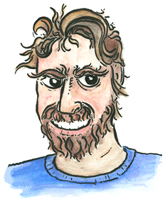

About Mountain Drawn
 Mountain Drawn is the personal site of Patrick Lewis. I wanted to build a hand drawn web site as a place to post trip reports from different climbing, kayaking and biking trips. See more photos and videos on my flickr account, PaddyMurphy, named after my dog.
Get in touch
Patrick@MountainDrawn.com
Article Categories
Austin, Biking, Caving, Climbing, Illustration, Paddling, Photography, Web DevelopmentFriends
- Darren Poore Photographics
- DHL Creative
- Holly Henderson Photography
- JH Jackson Photography
- Leonard Maiden Studios
- Sundry Studio